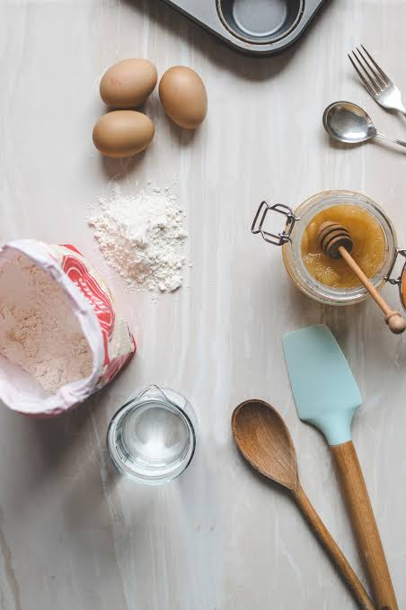

1.READING
I like reading comics,mystery,fantasy,action,adventure and historical fiction. However I am not a huge fan of non-fiction since they are real.my favorite ever book is the SIX OF CROWS series.
2.MOVIES
I love watching action,adventure,comedy,musical,drama,crime and animation films. Although I can't sit through horror and thriller movies.I usually watch American dramas but I also watch Korean drama,Amharic drama, Turkish drama and Chinesse drama.I can't name a certian favorite movie since I have seen a large amout of movies;thus it's hard to choose one.

3.LISTENING TO MUSIC
I am a firm beliver in music being free theraphy.I listen to RnB,HipHop,Rap,Kpop; Though my favorite genere is RnB.And my favorite song is Die for you by the weeknd. I am NOT a country music person since they are just not my vibe.
4.EXERSICING
Aside for its health benefit,exersicing is a really exhilarating activity for me .It just brights my day.

5.BAKING
I don't know why but baking is such a calming activity. espesially making everything from scrath is just a fun thing to do. yes!it might burn sometimes or it might be too sweet but hey! we can try again can't we.